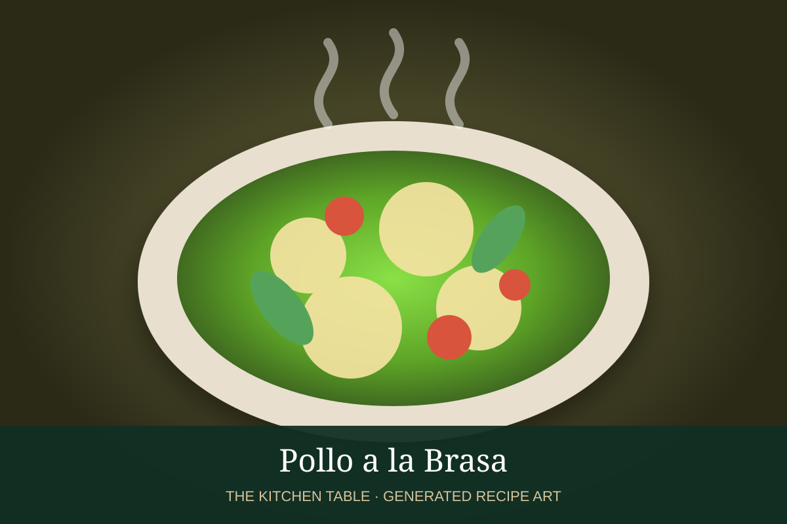

← Back to all recipes
CHICKEN · PERUVIAN
Pollo a la Brasa
Peruvian rotisserie-style chicken marinated with soy sauce, dark beer, ají panca, cumin, garlic, herbs, and vinegar.
1 hr 15 min + marinateServes 4–6

Photo: Peru.info
Ingredients
- 1 whole chicken, 4–5 lb
- 1 cup dark beer
- 2 tbsp soy sauce
- 2 tbsp white vinegar
- 2 tbsp ají panca paste
- 4 garlic cloves, minced
- 1 tsp ground cumin
- 1 tsp dried oregano
- 1 tsp rosemary
- 2 tsp kosher salt
- 1/2 tsp black pepper
- 2 tbsp neutral oil
Preparation
- Whisk beer, soy sauce, vinegar, ají panca, garlic, cumin, oregano, rosemary, salt, pepper, and oil.
- Coat chicken inside and out. Refrigerate at least 4 hours, preferably overnight.
- Heat grill or oven to 425°F with an indirect cooking zone if grilling.
- Roast or grill, turning as needed, until deeply browned and the thickest part of the thigh reaches a safe temperature.
- Rest 10 minutes before carving.
- Serve with fries, salad, and aji-style sauces.